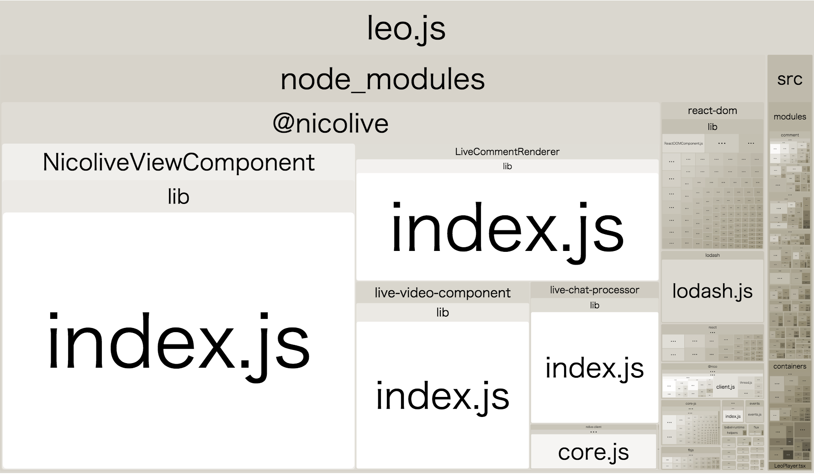

パッケージはBundleを配布しない
ニコニコ生放送 PCのHTML5プレイヤーは、基本的にはTypeScriptで書かれていてビルドにはwebpack + tsloaderという構造になっています。
webpackでビルドされているのでWebpack Bundle Analyzerを使い、ビルドしたパッケージの依存をビジュアライズして調査しました。
実際の改善前のbundleしたファイル構造は次のような形でした。

@nicoliveから始まるものは社内のnpmレジストリに公開されている社内モジュールです。
この社内モジュールがlib/index.jsという大きな1つファイルしか持っていないことがわかります。
これは、各パッケージがbundle済みのファイルをlib/index.jsとして配布するようになっていたためです。また、そのbundle済みファイルをpackage.jsonのmainに指定していたため、単純にrequireなどをするとbundle済みファイルがよみこまれるようになっていました
Bundle済みのファイルだけを配布する問題
パッケージがbundle済みのファイルだけを配布するメリットとデメリットは次のようになります。
メリット
- ライブラリ側にビルドしないと使えない特殊な仕組みがある場合に、使う側が何も考えずに利用できる
- 例) hls.jsは内部的にWeb Workerを使うためbundle済みファイルを配布をしている
- Direct require(
require("module/lib"))で非公開なファイルを参照されるのを防げる- React v16.0ではRollupで最適化したbundle済みファイルを配布することで
react/lib/*への参照を防いでいます
- React v16.0ではRollupで最適化したbundle済みファイルを配布することで
デメリット
- ライブラリ側が依存しているモジュールもbundleに含まれてしまう
- たとえば、ライブラリが
lodashを使っている場合に、bundleにもlodashが含まれてします - ライブラリを使う側も
lodashを使っている場合は、重複してlodashが入ってしまう
- たとえば、ライブラリが
- ライブラリを使う側でより積極的な最適化が行えない
- bundle済みのファイルを配布するということは、ES5へ変換済みのコードを配布するということになる
- Tree Shakingのようなアプリとライブラリを含めた全体で最適化するビルドが適応できなくなる
実際には、ライブラリはbundle済みのファイルとTypeScriptをJavaScriptに変換しただけのファイルの2種類を同時に配布できます。
今回の調査でライブラリlodashが使われていたものが複数あり、
その結果、複数のlodashがアプリに含まれていました(lodashは1つ20kb gzip)。
この問題を解消するために、ライブラリはそれぞれ二種類のファイルを出力するように修正しました。
- bundle済みのファイルを
dist/へ - tscで変換したファイルを
lib/へ
Before:
├── lib/
│ bundleしたファイル
├── src/
│ TypeScriptのソースコード
After:
├── dist/
│ bundleしたファイル
├── lib/
│ src/をJavaScriptに変換したファイル
├── src/
│ TypeScriptのソースコード
これによって、ライブラリの利用者側でbundle済みかlib/したのファイルを使うが選択できるようになりました。
- 開発時は
src/次のソースコードを編集する - ライブラリとして使う場合はJavaScriptに変換済みの
lib/が参照される - scriptタグなどで読み込む場合は
dist/のUMDへbundle済みファイルを直接利用する
この作業を社内に公開してるモジュールにそれぞれ適応しました。
計測
それぞれのライブラリがbundle済みではなくなったので、各ライブラリで重複したモジュールがなくなりました。 最終的にすべてをbundleしたJavaScriptのファイルサイズが小さくなることが確認できました。
- 2.7Mb -> 2.4Mb（gzipしてない状態）
- 765kb -> 681kb（gzip）
参考
- rstacruz/webpack-tricks: Tips and tricks in using Webpack
- th0r/webpack-bundle-analyzer: Webpack plugin and CLI utility that represents bundle content as convenient interactive zoomable treemap
- Webpack & React Performance in 16+ Steps
- JavaScriptライブラリ/プロジェクトのファイルサイズの問題点を見つける方法 - Qiita
- Webpackバンドルを占めるサイズがでかい奴を探す方法 - Qiita